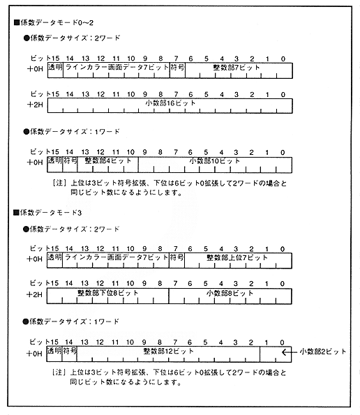

Mode 0: Use as scaling factor kx, ky Mode 1: Use as scaling factor kx Mode 2: Use as scaling factor ky Mode 3: Use as viewpoint coordinate Xp after rotation conversion
Coefficient table data bit configuration
